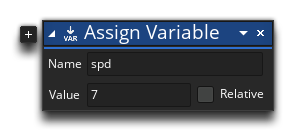
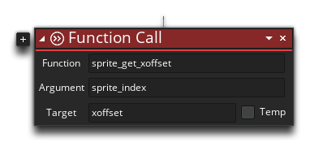
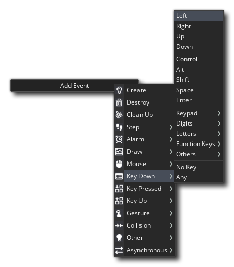
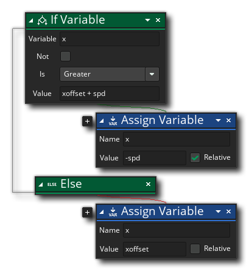
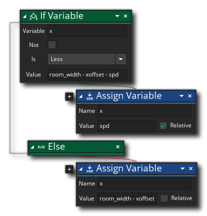
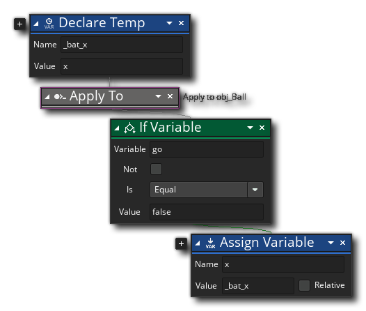

Now we'll create an object for the player to control, and in this case it's going to be a "bat" that will be used to bounce the ball back up the screen. For this, you need to:
- Create a new object (use the right mouse button
 on the Objects resource and select "Create Object")
on the Objects resource and select "Create Object") - Name the object "obj_Bat"
- Assign the object the sprite "spr_Bat" (click the button with "No Sprite" and select "spr_Bat" from the asset manager)
We'll also take a moment to create the Ball object. We won't be doing anything with it yet, but we need it to exist because we'll be applying actions to it later in the Bat object:
- Create a new object (use the right mouse button on the Objects resource and select "Create Object")
- Name the object "obj_Ball"
- Assign the object the sprite "spr_Ball" (click the button with "No Sprite" and select "spr_Ball" from the asset manager)
Go back to the Bat object now, and add a Create Event (click the Add Event button and select Create). In this Create event we'll add the following action to create a new instance variable, spd (from the "Common" category in the toolbox): 
This variable will be used to control the speed of movement for the bat. We also need to store the x offset value for the bat sprite, as we'll be using that to ensure that the bat doesn't go out of the screen when it moves left or right (the x offset value is the x position of the sprite origin). There isn't a dedicated DnD™ action for this, so we'll use the Function Call action (from the "Common" category) to call some GML, like this: 
This GML function will get the X offset value and then the action will store it in the variable xoffset for later use.
This object will also need Keyboard Events to check for keyboard input. Note that there are actually three types of Keyboard event: the Down event - which is triggered continuously while a key is being held down, the Pressed event - which is triggered once when a key is initially pressed down, and the Up event - which is triggered once when the key has been released. Go ahead and add a Keyboard Down Event for the Left arrow key now: 
In this event we want to add the following actions: 
Here we use the If Variable action along with the Else action (both from the "Common" category) to check "if the x position is greater than the spd plus the xoffset, add the spd value on to x, else set the x position to the xoffset value". This check simply ensures that the bat will only move left as long as the sprite is within the room bounds.
We need to do the same for moving right now, so add a Keyboard Down Right event to the object and give it the following actions: 
This does the same as the Left Down event, only now we are checking to see if the bat, when moving to the right, will go outside the width of the room (room_width is one of many built-in variables available to get room information).
We need to add one final event into this object, and that's a Step Event. The step event is called every "step", or frame, of the game, so any actions added here will be run continuously. We need to use this event to ensure the ball object "sticks" to the bat when moving left and right until the player decides to start the game.
Add the Step Event now (not the Begin or End events, but the general Step event) and give it the following actions: 
Here we create a temporary local variable to hold the unique ID value of the Bat instance, then we use the Apply to... action to tell GameMaker Studio 2 that the next actions are to be applied to the Ball object. The next actions have the ball object chack a variable and if it is false move the ball to the same x position as the bat.